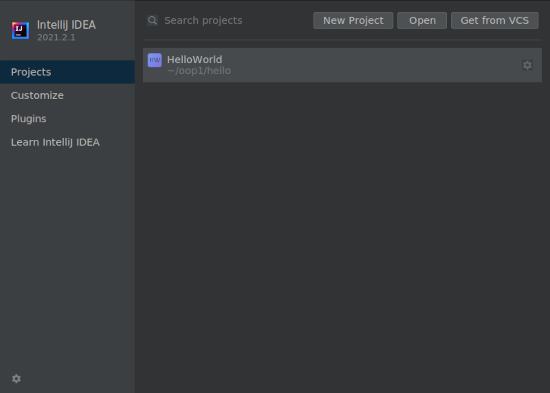

Hello World in Java¶
Installeer Java¶
Voor het compileren en uitvoeren van Java programma’s is een Java Development Kit (JDK) nodig. Je zal Java SE Development Kit 11 (JDK 11) gaan gebruiken.
Belangrijk
Het kan zijn dat je al eerder een JDK hebt geïnstalleerd. Controleer of dit versie 11 (of hoger) is. Een eenvoudige manier om dit te controleren is om een command line te openen en het volgende commando uit te voeren
> java -version
Indien je een foutbericht ziet, of als je niet weet hoe je het bovenstaande moet uitvoeren, volg dan de onderstaande installatiestappen voor jouw besturingssysteem.
De JDK die wij aanbevelen is OpenJDK, een open source implementatie van Java SE (Standard Edition). Ga naar AdoptOpenJDK en download een versie voor jouw besturingssysteem.
Kies OpenJDK 11 LTS (Long Term Support).
Je kan kiezen voor een JVM (Java Virtual Machine), HotSpot is een goede keus.
Let op
Let op het volgende bij installatie:
Kies voor
JAVA_HOMEaan het pad toe te laten toevoegen.Negeer bij installatie de optie om Oracle licentiesleutels toe te voegen, indien dit wordt gevraagd.
Indien je een package manager als brew gebruikt kan je OpenJDK eenvoudig als volgt installeren:
> brew install openjdk
Indien je geen package manager gebruikt, volg dan dezelfde instructies voor installatie als bij Windows.
Op Linux distributies is OpenJDK eenvoudig te installeren met package managers als apt of yum. Voor Debian en afgeleide distributies (bijvoorbeeld Ubuntu of Linux Mint) installeer je als volgt de meest recente OpenJDK versie:
> sudo apt-get install default-jdk
Editor¶
Java programma’s kunnen met elke teksteditor worden geschreven, wij raden IntelliJ IDEA aan, een ontwikkelomgeving (een IDE, of Integrated Development Environment) specifiek voor Java en op dit moment één van de meest gebruikte toepassingen voor het schrijven van Java programma’s.
Ga naar JetBrains en download & installeer IntelliJ IDEA Community Edition voor jouw besturingssysteem.
Andere editors
Het kan bijvoorbeeld zijn dat je eerder met Visual Studio Code (VSCode) hebt gewerkt en dit ook voor Java zou willen gebruiken. Je zal dan VSCode moeten uitbreiden met functionaliteit specifiek voor Java. Het Java Extension Pack is in dit geval een bundel van nuttige Java extensies om aan VSCode toe te voegen.
Let op, in deze cursus zal in de voorbeelden en opgaven worden uitgegaan van IntelliJ als standaardeditor voor Java, maar dit is niet verplicht en je mag een andere editor of IDE gebruiken als je wilt (maar wordt niet door ons ondersteund!).
Open een project in IntelliJ¶
Je gaat Java-programma’s ontwikkelen in IntelliJ IDEA Community Edition.
IntelliJ ordent Java-programma’s in projecten. In deze cursus komt elk project overeen met één programmeeropdracht. Een typisch project bevat Java-programma’s, bijbehorende gegevensbestanden en cursus-specifieke instellingen (zoals compileropties, stijlregels en bibliotheken, of class libraries).
Ik begrijp dit niet!
Maak je geen zorgen als je nog niet weet wat bijvoorbeeld met compileren, compileropties of class libraries wordt bedoeld. De betekenis zal duidelijker worden naarmate de cursus vordert.
Voor elke opdracht ga je een startproject downloaden waarin jij jouw programmacode gaat schrijven.
Download het volgende project voor de eerste programmeeropdracht naar een handige locatie (zoals bijvoorbeeld het Bureaublad).
Pak het project als volgt uit voor jouw besturingssysteem:
Om het zip-bestand uit te pakken, klik je er met de rechtermuisknop op en kies je Alles uitpakken. Hierdoor wordt een projectmap aangemaakt met de naam van de bijbehorende programmeeropdracht (in dit geval
hello). Het zip-bestand kan je nu verwijderen.Dubbelklik op het zip-bestand om het uit te pakken. Hierdoor wordt een projectmap aangemaakt met de naam van de bijbehorende programmeeropdracht (in dit geval
hello). Het zip-bestand kan je nu verwijderen.Pak het zip-bestand uit met het volgende commando:
> unzip -d hello hello.zipHierdoor wordt een projectmap aangemaakt met de naam van de bijbehorende programmeeropdracht (in dit geval
hello). Het zip-bestand kan je nu verwijderen.Start IntelliJ:
Wanneer je IntelliJ voor de eerste keer start,
kan IntelliJ he JetBrains privacybeleid weergeven. Scroll naar beneden en accepteer.
kan IntelliJ vragen of je anonieme gebruiksstatistieken naar JetBrains wilt sturen. Kies de gewenste optie.
zal IntelliJ een welkomstscherm tonen (Welkom bij IntelliJ IDEA).
Om een project te openen vanuit het welkomstscherm, klikt je op Openen

Fig. 1 Intellij welkomstscherm¶
Selecteer vervolgens de projectmap.

Fig. 2 Selecteer de projectmap¶
Wanneer je IntelliJ voor de eerste keer opstart kan het een minuut of twee duren om bestanden te indexeren, sommige functies (zoals automatisch importeren) zullen niet beschikbaar zijn totdat dit proces is voltooid.
Waarschuwing
Klik niet op Nieuw Project, deze optie is bedoeld voor gevorderde gebruikers. Gebruik ook altijd Openen met een projectmap, niet met een individueel bestand.
Maak een programma in IntelliJ¶
Nu bent je klaar om uw eerste Java programma te schrijven. IntelliJ heeft veel gespecialiseerde programmeerhulpmiddelen, zoals regelnummering, syntax highlighting, bracket matching, auto indenting, auto formatting, auto importing, variable renaming, en continue code inspectie.
Om een nieuw Java programma te maken:
Open IntelliJ en het project opnieuw (als je het in de vorige stap hebt gesloten).
Fig. 3 Open het project¶
Klik op de projectnaam in de Project View zijbalk (links), zodat deze gemarkeerd wordt.
Selecteer de menu-optie LIFT → Nieuwe Java Klasse. Als daar om gevraagd wordt, typ dan HelloWorld als naam en klik op OK.
Maak in het hoofdvenster van de editor het Java-programma
HelloWorld.javaprecies zoals het er hieronder uitziet. (IntelliJ genereert de grijze boilerplate code automatisch, eventueel met toevoeging van een course header block commentaar).public class HelloWorld { public static void main(String[] args) { System.out.println("Hello, World"); } }
Als je zelfs maar een puntkomma weglaat, zal het programma niet werken!
Terwijl je typt zal IntelliJ verschillende syntactische elementen in verschillende kleuren markeren. Wanneer je een haakje links typt, voegt IntelliJ het bijbehorende haakje rechts toe. Wanneer je een nieuwe regel begint, laat IntelliJ deze inspringen.
Om het bestand op te slaan kies je de menuoptie Bestand → Alles opslaan (Ctrl + S). Wanneer u het bestand opslaat, formatteert IntelliJ het (indien nodig) opnieuw.
Tip
IntelliJ is zo ingesteld dat wijzigingen die je in jouw bestanden aanbrengt automatisch worden opgeslagen bij verschillende gebeurtenissen (zoals compileren, uitvoeren, sluiten van een bestand of project, of het afsluiten van de IDE). We raden nog steeds aan om Bestand → Alles opslaan (Ctrl + S) te gebruiken om uw code opnieuw te formatteren.
Compileren en uitvoeren¶
Nu is het tijd om jouw programma uit te voeren (te draaien, of “runnen”). Dit is het meest spannende gedeelte, waarbij de computer de instructies volgt die jij in jouw programma hebt gespecificeerd. Alvorens dit te doen, zal je het programma moeten compileren in een vorm die beter geschikt is om door een computer uit te coeren.
De commandline is een eenvoudig en krachtig manier om jouw programma’s te besturen (bijv. commandline argumenten, file redirection, en piping). IntelliJ biedt een ingebouwde terminal voor eenvoudige toegang tot de commandoregel.
Selecteer de menu optie Beeld → Gereedschapsvenster → Terminal (Alt + 2). Dit zal een Git Bash terminal starten waar je commando’s kunt typen. Je zult een opdrachtprompt zien die er ongeveer zo uitziet:
Selecteer het programma dat je wilt compileren en uitvoeren in de Project View zijbalk. Het programma zou nu in het hoofdvenster van de editor moeten verschijnen.
Om je programma te compileren, selecteer je de menu-optie LIFT → Hercompileer ‘HelloWorld.java’ (Ctrl + B). Als de compilatie slaagt, krijg je een bevestiging in de statusbalk (onderaan).